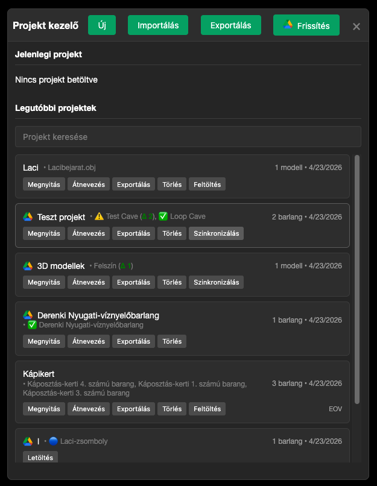

Google Drive integráció
Miért érdemes használni?
A Google Drive integráció lehetővé teszi az adatok biztonsági mentését, ami különösen hasznos azoknak, akik szeretnék biztosítani adataik biztonságát. A Drive integráció segítésével többen is szerkeszthetik ugyanazt a projektet, lehetővé téve a kollaboratív szerkesztést, amely hasznos azok számára is, akik több eszköz között szeretnék adataikat szinkronizálni.
A Google Drive integráció előnyei:
- ☁️ Felhő alapú tárolás: Az adatok biztonságosan tárolódnak a Google Drive-on, így nem vesznek el a számítógép meghibásodása esetén sem, vagy ha a böngésző kiüríti a lokális tárhelyet.
- 🔄 Automatikus szinkronizálás: A változtatások automatikusan menthetők a felhőbe, így mindig naprakész marad a projekt
- 👥 Együttműködés: Több felhasználó is dolgozhat ugyanazon a projekten, megosztva az adatokat
- 📱 Több eszköz: Otthoni és munkahelyi számítógépen, vagy akár telefonon is elérheti az adatokat
- 📜 Verziókezelés: A Google Drive automatikusan menti a fájlok korábbi verzióit, így bármikor visszaállítható egy korábbi állapot
Google Drive integráció engedélyezése
A Google Drive integráció használatához először engedélyeznie kell a Speleo Studio-nak, hogy hozzáférjen az Ön Google Drive fiókjához, ezt hívjuk hitelesítésnek. Ez egy egyszeri beállítás, amelyet a böngészőben kell elvégeznie.
Hitelesítés - titkos kulcsok
A hitelesítés során szükséges egy Ügyfél azonosító és egy Ügyfél titok, amelyeket a legtöbb esetben a Speleo Studio csapatától fog megkapni. Kérjük kezelje ezeket jelszavakhoz hasonlóan bizalmasan és mással ne ossza meg őket, ellenkező esetben a Google Drive fiókjához mások is hozzáférhetnek.
1. lépés: Google Drive konfigurációs panel
Kattintson az "Eszközök" menü "Google Drive szinkronizálás" menü elemére. Megnyílik a konfigurációs panel.

2. lépés: Adatok megadása
Adja meg a következő adatokat:
- Ügyfél azonosító: A Speleo Studio csapatától kapott OAuth 2.0 kliens azonosító
- Ügyfél titok: A Speleo Studio csapatától kapott OAuth 2.0 kliens titkos kulcs
- Példány neve: A Speleo Studio futó példányának azonosítához szolgál, amely kollaboratív szerkesztés esetén azonosítja az ön Speleo Studio példányát egy adott böngészőben
A mappa beállítások két oszlopban jelennek meg:
Általános mappák
- Gyökér: Ide megadható egy Google Drive mappa neve vagy egy mappa-azonosító
(pl.
1xM87V6FaOsgAQ2M8pxahDDfDtzHPwG2Y). Ha nevet ad meg, a Speleo Studio keresi vagy létrehozza azt a mappát (alapértelmezett: "Speleo Studio"). Ha mappa-azonosítót ad meg, a Speleo Studio közvetlenül azt a mappát használja — ez különösen hasznos, ha egy Önnel megosztott mappát szeretne gyökérmappaként használni. A mappa-azonosítót a Google Drive URL-jéből lehet kiolvasni:https://drive.google.com/drive/folders/AZONOSÍTÓ. Az azonosítós keresés elsőbbséget élvez a névszerinti kereséssel szemben. - Barlangok: A barlangok almappa neve (alapértelmezett: "Barlangok")
- Projektek: A projektek almappa neve (alapértelmezett: "Projektek")
- Modellek: A 3D modellek gyökérmappájának neve (alapértelmezett: "Models")
Modell almappák
- Modell fájlok: A tömörített geometriai binárisok mappája (alapértelmezett: "ModelFiles")
- Textúrák: A tömörített textúra fájlok mappája (alapértelmezett: "TextureFiles")
- Metaadatok: A modell metaadatok JSON fájljainak mappája (alapértelmezett: "Metadata")
- Beállítások: A modell beállítások JSON fájljainak mappája (alapértelmezett: "Settings")
Döntse el, hogy szeretne-e automatikus szinkronizálást használni, amely minden mentés után automatikusan feltölti a változtatásokat a Google Drive-ra, vagy manuálisan szeretne szinkronizálni minden változtatás után?
Döntse el, hogy kollaboratív szerkesztés esetén ha ütközés van, akkor mi legyen a stratégia? Ha szeretné mindig a saját változtatásai feltölteni, akkor válassza a "Saját változtatások feltöltése" opciót. Ha szeretné a másik változtatásokat feltölteni, akkor válassza a "Ütközések figyelmen kívül hagyása" opciót.
3. lépés: Hitelesítés
Kattintson a "Hitelesítés" gombra. A felugró ablakban vagy ki kell választania egy bejelentkezett Google felhaszálót, vagy be kell jelentkeznie a Google fiókjába, hogy engedélyeznie tudja a Speleo Studio hozzáférését. A felhasználó kiválasztása után kattintson a "Folytatás" gombra.

4. lépés: Sikeres hitelesítés
A hitelesítés sikeresen megtörténik, és a Speleo Studio hozzáférést kap a Google Drive-hoz.

4. lépés: Engedélyezés
Kattintson az "Engedélyezés" gombra. Egy felugró ablakban a Google bejelentkezési oldala jelenik meg, ahol be kell jelentkeznie a Google fiókjába és engedélyeznie kell a Speleo Studio hozzáférését.
5. lépés: Engedélyek megadása
A Google fiókjában engedélyezze a Speleo Studio alkalmazásnak a következő jogosultságokat:
- Google Drive fájlok létrehozása és kezelése
- Google Drive mappák létrehozása és kezelése
⚠️ Fontos: ne szerkessze a fájlokat manuálisan a Google Drive-on
A Speleo Studio revíziószámlálókat és alkalmazás-metaadatokat tárol a Drive-on, amelyeket a szinkronizálás során ütközésészleléshez és konzisztencia-ellenőrzéshez használ. Ha manuálisan átnevez, áthelyez, szerkeszt vagy töröl fájlokat a Drive-on belül a Speleo Studio mappájában, a belső állapot össze fog keveredni, és a szinkronizálás hibás ütközésjelzéseket mutathat, elveszhet adat, vagy teljesen leállhat.
- Ne nevezze át a Speleo Studio által létrehozott mappákat vagy fájlokat a Drive webes felületén
- Ne töröljön fájlokat manuálisan a Drive-on — csak a Speleo Studio felületéről töröljön adatokat
- Ne másolja vagy mozgassa a Speleo Studio mappa tartalmát más Drive-mappákba
- Ha mégis manuális módosítás történt, bontsa a kapcsolatot, és töltse fel újra a projektet a nulláról
Projekt panel — Drive szinkronizáció állapota
A projekt panel megjeleníti az összes helyi projektet, és ha a Google Drive hitelesítés aktív, minden projekt mellett látható annak szinkronizációs állapota. A panel a Drive-on tárolt és a helyi adatok összehasonlítása alapján határozza meg az állapotot.

Ikonok és jelzők a projekt listában
Minden projekt neve előtt egy ikon, mögötte opcionálisan egy revízió-különbség szám jelenik meg, attól függően, hogy a helyi és a Drive-on lévő verzió mennyire tér el:
| Jelzés | Jelentés |
|---|---|
| ✅ Projekt neve | Naprakész — a helyi és Drive verzió megegyezik |
| 🟢 Barlang neve | Csak helyi — ez az elem még nincs feltöltve a Drive-ra |
| 🔵 Barlang neve | Csak Drive-on — a Drive-on van, helyben nem létezik |
| 🔴 Barlang neve | Drive-ról törölve — egy másik eszköz törölte a Drive-ról, helyben még megvan |
| ⭕ Barlang neve | Helyileg törölt, Ön a tulajdonos — szinkronizáláskor törlődik a Drive-ról is |
| 🚫 Barlang neve | Helyileg törölt, nem Ön a tulajdonos — szinkronizáláskor a Drive-ról letöltődik vissza |
| Projekt neve Δ 3 | Zöld Δ (delta) szám — a helyi verzió ennyivel újabb a Drive-nál. Ez normális: ennyi változtatás vár feltöltésre. |
| Projekt neve ∇ 2 | Piros ∇ (nabla) szám — a Drive-on lévő verzió ennyivel újabb a helyinél. Egy másik eszköz töltött fel újabb adatokat. Szinkronizáláskor a Drive verziója töltődik le. |
| ⚠️ Projekt neve | Ütközés — mind a helyi, mind a Drive-on lévő verzió módosult a legutóbbi szinkron óta, és a változtatások nem illeszthetők össze automatikusan. Szinkronizáláskor a rendszer megerősítést kér. |
A projekt neve alatt a barlangok és beágyazott 3D modellek is megjelennek ugyanezekkel a jelzőkkel, így egy pillantással látható, melyik elem vár feltöltésre vagy letöltésre.
Gombok a projekt listában
Feltöltés gomb (Upload)
Ha egy projektnek még nincs Drive-os másolata, az elem mellett egy Feltöltés gomb jelenik meg. Erre kattintva a projekt és összes barlangja (valamint beágyazott modelljei) először kerülnek fel a Drive-ra. Ezt követően a gomb eltűnik, és a Szinkronizálás gombra cserélődik.
Szinkronizálás gomb (Sync)
Ha a projekt már fel van töltve és van különbség (zöld Δ, piros ∇ vagy ütközés), egy Szinkronizálás gomb jelenik meg. A gomb:
- Helyi változásokat (Δ) feltölt a Drive-ra
- Drive-os újabb változásokat (∇) letölt és alkalmaz
- Ütközés esetén (⚠️) megerősítést kér, majd a konfigurált stratégia szerint jár el
- Új helyi barlangokat (🟢) feltölt; Drive-only barlangokat (🔵) letölt
- Szinkronizálás közben a gomb letilt és "szinkronizálás..." feliratot mutat
Letöltés gomb (Download)
Ha a Drive-on van egy projekt amelynek nincs helyi másolata (pl. egy másik eszközről töltötték fel, vagy a böngésző adatai törlődtek), a projekt listaelem egy Letöltés gombbal jelenik meg. Kattintásra a projekt, összes barlangja és beágyazott modelljei letöltődnek és megjelennek a helyi listában.
Revízió-különbség értelmezése
A Speleo Studio minden módosításkor növel egy belső revíziószámlálót. A szám mögött zárójelben látható a különbség a helyi és a Drive-on tárolt revízió között:
- Δ N — a helyi revízió N-nel magasabb a Drive-nál. Ez azt jelenti, hogy N mentési művelet történt azóta, hogy a projekt utoljára szinkronizálva lett. Feltöltéskor ez a szám nullára csökken.
- ∇ N — a Drive-os revízió N-nel magasabb a helyinél. Valaki más (vagy egy másik eszköz) N változást töltött fel. Letöltés után ez nullára csökken.
- Nincs szám — a projekt naprakész, revízió-különbség nulla (✅ ikon jelenik meg).
A 3D modelleknél a metaadat (név, koordinátarendszer) és a beállítások (transzformáció, átlátszóság) revíziói egymástól függetlenül követik a változásokat. A jelzett szám a kettő maximuma.
Ütközések (⚠️)
Az ⚠️ ikon ütközést jelez. Ez akkor fordul elő, ha:
- A helyi verzió újabb a Drive-nál (Δ), de a helyi módosítás nem az utolsó ismert Drive-verzióra épül — vagyis közben valaki más is módosított és feltöltött.
- A Drive verzió újabb a helyinél (∇), és helyi, még nem szinkronizált változtatás is van.
- A revíziók megegyeznek, de a helyi adat "szinkronizálatlan" jelzőt hordoz — ez ritka esetben fordulhat elő ha a szinkronizálás megszakadt.
Szinkronizáláskor az ütköző elemekre egy megerősítő párbeszédablak jelenik meg, amely megmutatja, melyik elem ütközik és melyik Speleo Studio példányból érkezett az ütköző verzió. A konfigurált ütközési stratégia (Saját változtatások / Figyelmen kívül hagyás) alapján folytatódik a szinkronizálás.
Frissítés gomb (Refresh)
A projekt panel tetején a Frissítés (🔁) gomb újra lekéri a Drive-ról a projektlistát és frissíti az összes szinkronizációs jelzőt. Érdemes megnyomni, mielőtt szinkronizálni kezd, hogy a legfrissebb Drive-állapotot lássa.
Együttműködés és csapatmunka
A Google Drive integráció kiváló eszköz a csapatmunkához és az együttműködéshez. Több felhasználó is dolgozhat ugyanazon a projekten, és az adatok automatikusan szinkronizálódnak a felhőben.
Együttműködés jellemzői:
- Megosztott projektek: A Google Drive mappák megoszthatók más felhasználókkal, így mindenki hozzáférhet a projekt adataihoz
- Valós idejű frissítések: A változtatások azonnal láthatók minden felhasználó számára a szinkronizálás után
- Jogosultságok kezelése: A Google Drive beépített jogosultság-kezelő rendszerével szabályozható, ki mit érhet el és módosíthat
- Értesítések: A Google Drive értesítéseket küld a változtatásokról, így mindenki naprakész marad
Együttműködés beállítása
1. lépés: Mappa megosztása
Nyissa meg a Google Drive-ot böngészőben, keresse meg a Speleo Studio mappát, és ossza meg a kívánt felhasználókkal.
2. lépés: Jogosultságok beállítása
Állítsa be a megfelelő jogosultságokat:
- Megtekintő: Csak olvasási jogosultság
- Szerkesztő: Olvasási és írási jogosultság
3. lépés: Megosztott adatok használata
A megosztott felhasználók a saját Speleo Studio alkalmazásukban láthatják és szerkeszthetik a megosztott projekteket a Google Drive szinkronizálás után.
Konfliktusok és revíziók kezelése
Amikor több felhasználó dolgozik ugyanazon a projekten, előfordulhatnak konfliktusok, ha egyszerre módosítják ugyanazt az adatot. A Speleo Studio és a Google Drive együttműködve kezeli ezeket a helyzeteket.
Mi a konfliktus?
Konfliktus akkor keletkezik, amikor két vagy több felhasználó egyszerre módosítja ugyanazt a fájlt, és a változtatásokat nem lehet automatikusan egyesíteni. Ilyenkor a rendszer megpróbálja a lehető legjobban kezelni a helyzetet, de előfordulhat, hogy manuális beavatkozásra van szükség.
Konfliktusok elkerülése
1. Kommunikáció
A csapattagoknak érdemes egyeztetniük, hogy ki melyik barlangon vagy felmérése dolgozik éppen. Ez minimalizálja az átfedéseket.
2. Gyakori szinkronizálás
Rendszeresen szinkronizálja az adatokat, hogy a legfrissebb verzióval dolgozzon. Az automatikus szinkronizálás bekapcsolása különösen hasznos lehet.
3. Munkamegosztás
Osszák fel a munkát úgy, hogy a csapattagok különböző barlangokon vagy felméréseken dolgozzanak egyszerre.
Revíziók kezelése
A Google Drive automatikusan menti a fájlok korábbi verzióit (revízióit), így bármikor visszaállítható egy korábbi állapot. Ez különösen hasznos, ha véletlenül hibás adatot mentünk, vagy vissza szeretnénk nézni a korábbi változatokat.
Korábbi verzió visszaállítása
- Nyissa meg a Google Drive-ot böngészőben
- Keresse meg a kívánt fájlt a Speleo Studio mappában
- Kattintson jobb gombbal a fájlra és válassza a "Verzióelőzmények kezelése" opciót
- Válassza ki a visszaállítani kívánt verziót
- Kattintson a "Visszaállítás" gombra
⚠️ Revíziók megőrzése
A Google Drive alapértelmezetten 30 napig őrzi meg a revíziókat, vagy 100 verziót, attól függően, hogy melyik következik be előbb. Fontos dokumentumok esetén érdemes rendszeres biztonsági mentést készíteni helyi tárolóra is.
Automatikus szinkronizálás (Autosync)
Az automatikus szinkronizálás funkció lehetővé teszi, hogy a Speleo Studio automatikusan mentse a változtatásokat a Google Drive-ra minden mentés után. Így nem kell manuálisan szinkronizálni, és mindig naprakész marad a felhőben tárolt verzió.
Az Autosync előnyei:
- Kényelmes: Nem kell manuálisan szinkronizálni minden változtatás után
- Biztonságos: A változtatások azonnal mentésre kerülnek a felhőbe
- Naprakész: A csapattagok mindig a legfrissebb adatokkal dolgozhatnak
Autosync bekapcsolása
1. lépés: Google Drive menü
Kattintson a "Google Drive" menüre a navigációs sávban.
2. lépés: Automatikus szinkronizálás
Válassza az "Automatikus szinkronizálás" opciót. A menüpont mellett egy pipa jelzi, ha az automatikus szinkronizálás be van kapcsolva.
3. lépés: Működés
Az automatikus szinkronizálás bekapcsolása után a következő műveletek indítanak automatikus feltöltést:
- Projekt vagy barlang mentése
- Beágyazott 3D modell átnevezése (metaadat frissítés)
- Beágyazott 3D modell transzformációjának, átlátszóságának vagy láthatóságának módosítása (beállítás frissítés)
A transzformáció beviteli mezők változtatásai 2 másodperces késleltetéssel szinkronizálódnak, hogy a gyors, egymást követő módosítások egyetlen feltöltésbe kerüljenek össze.
⚠️ Internetkapcsolat szükséges
Az automatikus szinkronizálás működéséhez folyamatos internetkapcsolat szükséges. Ha nincs internet, a változtatások helyben tárolódnak, és a kapcsolat helyreállása után manuálisan kell szinkronizálni.
Manuális szinkronizálás
Az automatikus szinkronizálás mellett bármikor manuálisan is szinkronizálhat a Google Drive-ral. Ez hasznos lehet, ha gyorsan szeretné feltölteni a változtatásokat, vagy ha az automatikus szinkronizálás ki van kapcsolva.
Adatok feltöltése
Minden adat szinkronizálása
Válassza a "Google Drive" menüből a "Minden szinkronizálása" opciót a projektek és barlangok egyidejű feltöltéséhez.
Csak projektek szinkronizálása
Válassza a "Projektek szinkronizálása" opciót csak a projekt adatok feltöltéséhez.
Csak barlangok szinkronizálása
Válassza a "Barlangok szinkronizálása" opciót csak a barlang adatok feltöltéséhez.
Adatok visszaállítása
Minden adat visszaállítása
Válassza a "Google Drive" menüből a "Minden visszaállítása" opciót az összes adat letöltéséhez a Google Drive-ról.
Csak projektek visszaállítása
Válassza a "Projektek visszaállítása" opciót csak a projekt adatok letöltéséhez.
Csak barlangok visszaállítása
Válassza a "Barlangok visszaállítása" opciót csak a barlang adatok letöltéséhez.
3D modellek szinkronizálása
A Speleo Studio képes a beágyazott (embedded) 3D modelleket is szinkronizálni a Google Drive-ra. Csak azok a modellek szinkronizálódnak, amelyeket a felhasználó beágyazottnak jelölt meg (a modell jobb klikk menüjének 🔗 ikonjával). A nem beágyazott modellek helyi tárolóban maradnak.
Mit tárol a Drive a modellekről?
- Geometria fájl (ModelFiles/): A modell bináris geometriája gzip tömörítéssel
(
.gzkiterjesztéssel). Ez az adat feltöltés után változatlan marad — ha a geometria nem változik, nem töltődik fel újra. - Textúra fájlok (TextureFiles/): Az MTL és képfájlok szintén gzip tömörítéssel. Szintén immutábilis — egyszer töltődnek fel.
- Metaadatok (Metadata/): A modell neve, koordinátarendszere és beágyazottsági jelzője JSON formátumban. Minden módosítás után frissül.
- Beállítások (Settings/): A modell transzformációja (pozíció, forgatás, méretezés), átlátszósága és láthatósága JSON formátumban. Minden módosítás után frissül.
Független revíziókövetés
A metaadatok és a beállítások revíziói egymástól függetlenül követik a változásokat. Ha csak az átalakítást módosítja, csak a beállítások fájl töltődik újra fel — a geometria és a metaadatok érintetlenek maradnak. A projekt panelen a modell neve mellett megjelenik a szinkronizáció állapota (✅ naprakész, Δ helyi változás, ⚠️ ütközés).
Mappa struktúra a Google Drive-ban
A Speleo Studio a következő mappa struktúrát hozza létre a Google Drive-ban:
Mappa struktúra
Speleo Studio/
├── Projects/
│ ├── Projekt1.json
│ ├── Projekt2.json
│ └── ...
├── Caves/
│ ├── Projekt1_Barlang1.json
│ ├── Projekt1_Barlang2.json
│ └── ...
└── Models/
├── ModelFiles/
│ └── {modell-azonosító}.gz
├── TextureFiles/
│ └── {textúra-azonosító}.gz
├── Metadata/
│ └── {modell-azonosító}.json
└── Settings/
└── {modell-azonosító}.json
Megjegyzések a mappa struktúrához:
- A mappák automatikusan létrejönnek, ha nem léteznek
- Minden mappa neve testreszabható a beállítások panelen
- A barlang fájlok neve tartalmazza a projekt nevét is az egyértelműség kedvéért
- A modell geometria és textúra fájlok gzip tömörítéssel kerülnek tárolásra (
.gz) - A Drive fájlok info paneljén (jobb klikk → Részletek) látható a Speleo Studio által tárolt metaadat: projekt neve, revíziószám, alkalmazás azonosítója és az utolsó szinkronizálás forrása. Ez hasznos lehet diagnosztikánál vagy ha kézzel kell ellenőrizni egy fájl állapotát.
Kizárt adatok
A következő adatok nem kerülnek szinkronizálásra a Google Drive-ra:
- Nem beágyazott 3D modellek: Csak a beágyazottnak (🔗) jelölt modellek szinkronizálódnak
- Felmérés szerkesztő ideiglenes, nem elmentett szerkesztések: Ideiglenes szerkesztési állapotok és mentetlen változtatások
Hibaelhárítás
Gyakori problémák
1. Engedélyezés sikertelen
- Ellenőrizze, hogy a Client ID és Client Secret helyes-e
- Győződjön meg róla, hogy a domain hozzá van adva az engedélyezett eredet URL-ekhez
- Ellenőrizze az átirányítási URL helyes konfigurációját
2. Szinkronizálás sikertelen
- Ellenőrizze az internetkapcsolatot
- Győződjön meg róla, hogy van elegendő tárhely a Google Drive-on
- Ellenőrizze, hogy a hitelesítés még érvényes-e (a tokenek lejárhatnak)
3. Mappa nem található / megosztott mappa nem érhető el
- A Speleo Studio automatikusan létrehozza a mappákat, ha nem léteznek
- Ellenőrizze, hogy van írási jogosultsága a Google Drive-on
- Ha egy Önnel megosztott mappát szeretne gyökérmappaként használni, adja meg a mappa Drive azonosítóját a "Gyökér" mezőbe a neve helyett (lásd a konfigurációs lépéseket)
Újra hitelesítés
Ha hitelesítési hibákat tapasztal:
1. Kapcsolat bontása
Nyissa meg a Google Drive beállításokat és kattintson a "Kapcsolat bontása" gombra.
2. Újra engedélyezés
Adja meg újra a hitelesítő adatokat és kattintson az "Engedélyezés" gombra.
Következő lépések
Most, hogy megismerte a Google Drive integrációt, folytathatja az exportálás és megosztás fejezettel, ahol megtanulja, hogyan exportálhatja az adatokat különböző formátumokba.